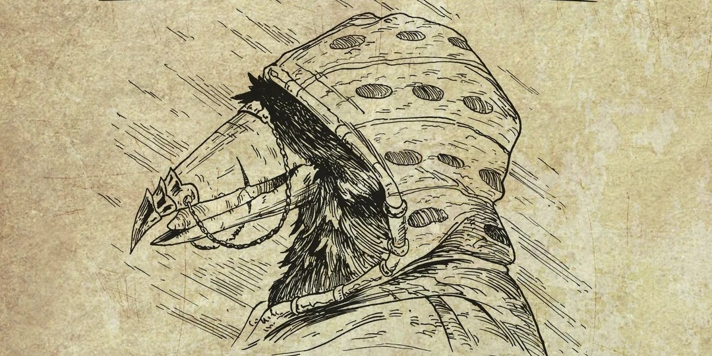

Edição Ano 1492 da DRO Jornal Mais Lido de FaerûnPreço: 2 Peças de Prata
O GAZETTE DE FAERÛN
Verdade, Magia e Informação
ÚLTIMA HORA
DRAGÃO VERMELHO AMEAÇA REINO E EXIGE TRIBUTO EM OURO
Por Elminster de Shadowdale — Waterdeep
O dragão Ashardalon atacando próximo às muralhas ao amanhecer.
A tranquilidade do reino foi interrompida nesta manhã quando o dragão ancião Ashardalon pousou nos picos de Daggerford. A criatura enviou uma comitiva de kobolds ao conselho da cidade exigindo metade do tesouro local.
O conselho dos Lordes declarou estado de emergência e convocou aventureiros para defender as fronteiras. O pagamento inclui imunidade fiscal e títulos de nobreza.
NOTÍCIAS PRINCIPAIS
ACONTECIMENTOS
Descoberta de antiga cripta sob a biblioteca arcanum
Escavações nos subsolos de Baldur's Gate revelaram compartimentos selados desde a Era das Perturbações. Especialistas do Clero de Oghma foram chamados para catalogar tomos e relíquias misteriosas.
EXPLORAÇÃO
Rota comercial para a Costa da Espada é reaberta
Com o fim do cerco dos goblins às passagens das montanhas, as caravanas mercantes voltaram a circular com segurança, reduzindo os custos de mantimentos e suprimentos na região.
TEMPO E CLIMA
Tempestades mágicas atingem os Vales do Norte
Chuva de brasas e rajadas congelantes afetaram as plantações locais. Magos metereológicos recomendam reforçar proteções defensivas nas vilas agrícolas.
RECOMPENSAS & PROCURADOS
PROCURADO VIVO OU MORTO

Vastineer, o Sussurrante
Necromancia não autorizada e roubo de tomos arcanos.